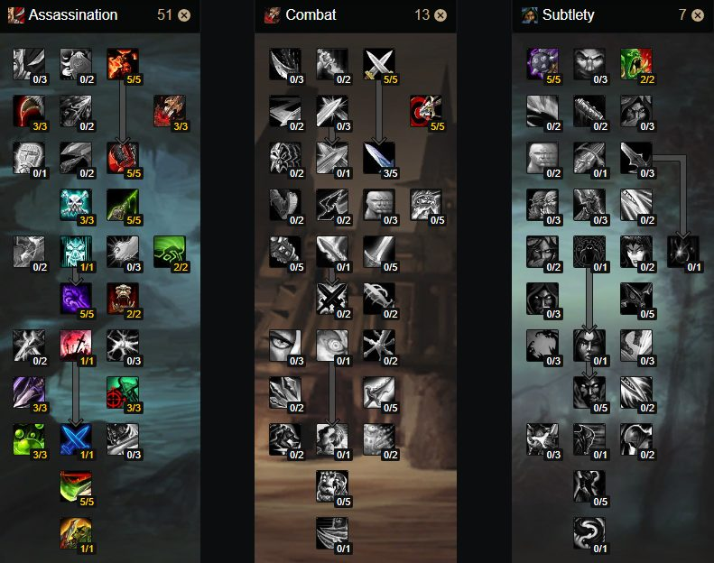

Assassination Rogues are fast-hitting murderers, utilizing their low damage but ultra instinct-like super speed
melee attacks and poisons to disable their enemies. Their gameplay uses very few elements of stealth, choosing
instead to venture headfirst directly into the battlefield, rapidly attacking enemies in a killing spree.
Ideal for early game Assassination, this is the build you will likely use during phase 1. it relies less on stats and more on getting your actual abilities and combo points rolling

Glyph of mutilate
Glyph of hunger for blood
Glyph of Tricks of the trade
1. Hit Rating (to cap) = 237;
2. Expertise Rating (to cap) = 314 (26);
3. Agility;
4. Strength and Attack Power;
5. Haste;
6. Critical Strike Rating;
7. Armor Penetration.
Note that there are buffs and talents that can affect your
Hit Rating which need to be taken into account when pushing for the caps.
| Buff name | Effect | Physical hit | Poison hit |
|---|---|---|---|
| Precision | Increases hit chance by 5% with 5/5 talent points in it. | Yes | Yes |
| Heroic presence | Having a Draenei in your party gives you 1% extra hit rating. | Yes | Yes |
| Improved Faerie Fireor misery | Increases spell hit chance by 3%. | No | Yes |
I'm Raptor i have played wotlk since 2009, until its demise when the lich died,
after cata and mop i was done of retail and reklinded that spark in 2015 til 2020.
Wich means i've spent give of take 11 years on this expansion alone.